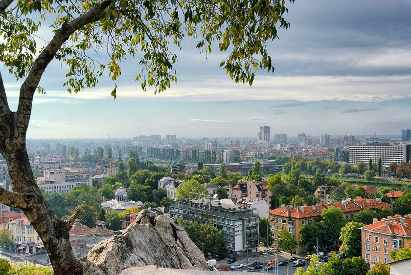

Начало
География
История
Храмове
Старият
град Пловдив
Забележителности
Интересни
факти
Развлечения
|
Интересни факти
1.Пловдив е вторият по големина град в България.
2.Пловдив е град на над 8000 години, чието минало може да се проследи от праисторията до наши дни.
3.„Градът под тепетата“ съществува без прекъсване от VI хилядолетие пр.н.е., но името му не е известно до средата на IV век пр.н.е.
4.Днешната Хуманитарна гимназия „Св. Св. Кирил и Методий“ в Пловдив е първата българска гимназия, основана на 1 септември 1850 г. от Найден Геров.
5.В Старинен Пловдив през 1855 година е основано първото издателство в България. Това става в къщата на Христо Данов, която в наши дни е музей.
6.Античният театър на Пловдив освен, че е гордостта на града се оказвеа и един от най-добре запазените антични театри в света.
7.Пловдив е най-старият жив град (който съществува и днес) в Европа и шестият най-стар в света.
8.Въпреки че е известен като Града на седемте хълма, в момента тепетата в Пловдив са 6. Марково тепе е било разрушено в началото на 20 – ти век, като част от материала от него се е използвал за пътища в Пловдив и други градове.
9.Традицията на 24 май да се празнува българската култура и писменост тръгва именно от град Пловдив.
10.Пловдив е името на връх в планината Тангра на остров Ливингстън.

Йоана Иванова, Ивайла
Гаджакова, Ивайла Невенова
2024
|
|